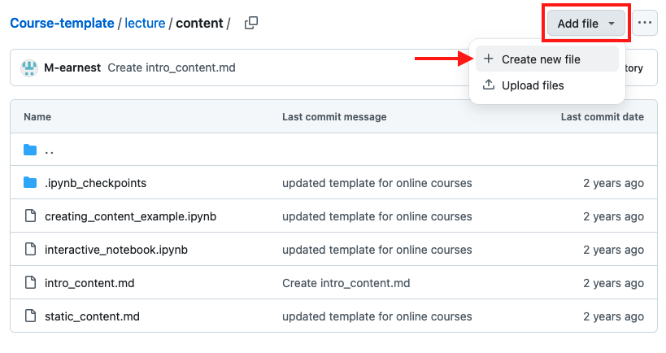
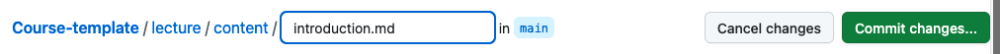

Creating Engaging Content#
A good design is essential to effectively convey messages. Even with great content, a wall of plain text often fails to capture attention. Fortunately, Jupyter Book offers various formatting options, including media, to help make your content more engaging. In this chapter, you’ll learn how to create captivating content for your users.
Goals#
This chapter aims to include the following goals.
Learn which types of files you can integrate into your Jupyter Book.
Learn how to create new files.
Learn how to format your text with Markdown.
Learn how to embed images, videos, and slides.
Learn how to include citations.
Learn how to include feedback questions.
Learn how to set up your table of content.
Different File Types#
Jupyter Book supports a variety of markup languages and formats, including Markdown files, Jupyter Notebooks, MyST Markdown notebooks, reStructuredText, and more. In this tutorial, however, we will focus on using Markdown (.md) files, a simple yet powerful markup language. Markdown is ideal for text-based content and allows easy embedding of multimedia such as images and videos. If your project involves code and visualizations for scientific computing, we recommend using Jupyter Notebook (.ipynb) files.
Here’s an overview of both file types:
.md files are Markdown files, which are primarily used for creating simple, easy-to-read documents. They use a simple syntax for formatting text and are often used for documentation, READMEs, and other types of text-based content. They are also commonly used in conjunction with version control systems like Git and can be easily rendered on various platforms.
.md files are best for documentation, READMEs, and other types of text-based content.
.ipynb files are Jupyter Notebook files and are primarily used for interactive data science and scientific computing. They allow for the combination of code, text, and visualizations all in one place, making it easy to document and share code-driven projects. They are often used by data scientists and researchers to share their work with others and can be easily converted to other formats like .html or .pdf for sharing.
.ipynb files are best for interactive, code-driven projects.
Create a New File#
In the next section, you’ll learn the basics of Markdown formatting. To get started, let’s create a new file!
Navigate to the folder where you’d like to add the new file.
Click on “Add file” in the upper-right corner and select “Create new file.”

Give your file a name and specify the file type, such as “introduction.md” to create a Markdown file.

Now you’re ready to add your content and format it using Markdown!
Next Section:#
In the next section, we’ll show you how to format your content using Markdown.